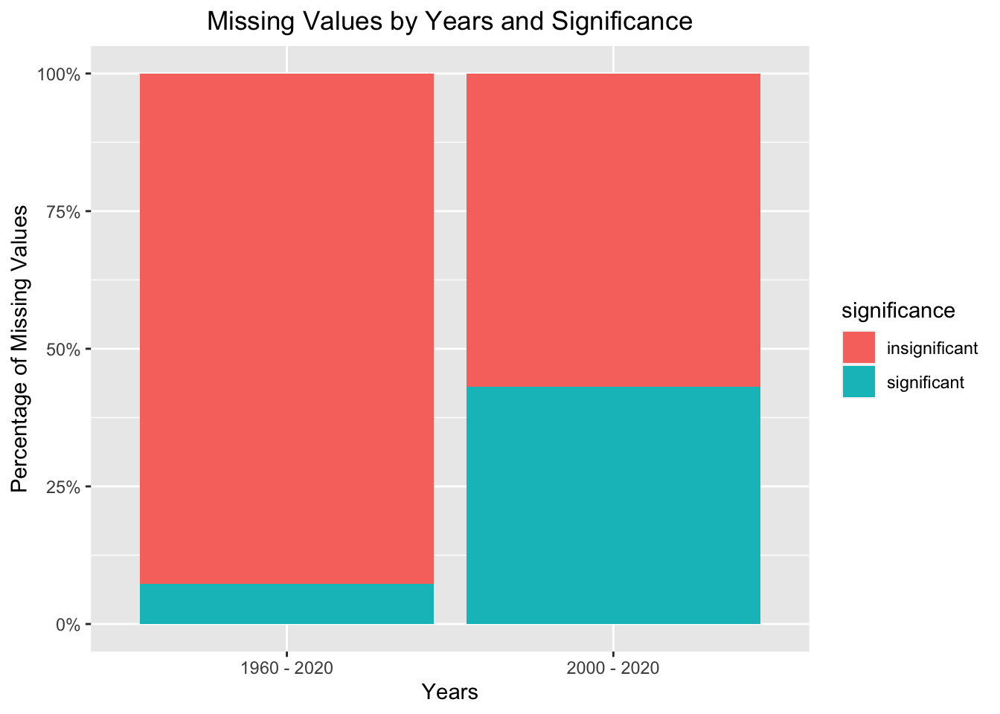
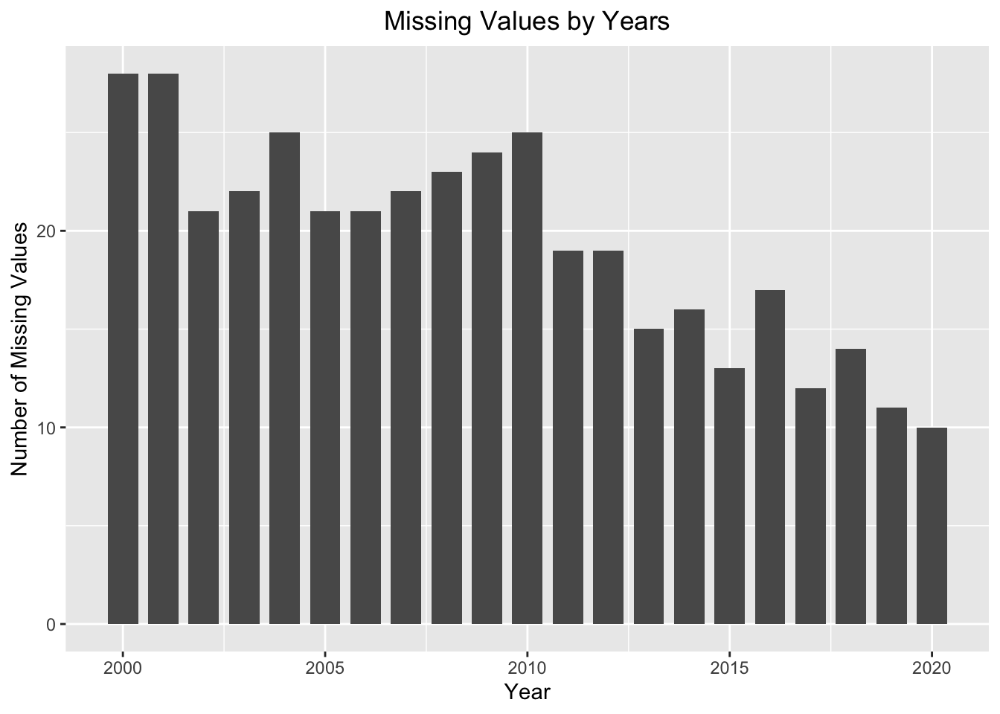

Chapter 4 Missing values
UNHCR Refugee Data
The Refugee Data had a lot of missing values. However since this was time series data, not all missing values were significant. For example - Angola had Refugee Numbers starting from 1960 while Colombia had Refugee Numbers starting from 1981. So even though Colombia would have missing values from 1960 to 1980, these would not be significant as it did not have a Refugee Crisis at that time.
Thus the missing values were split into 2 categories -- Significant - Missing Values after the First Non-NULL Year
- Insignificant - Missing Values before the First Non-NULL Year
This distinction was arrived based on the above example as the first Non-NULL year by country would indicate the start of a Refugee Crisis and the missing values after this year would be ‘missing’ while the missing values before this year would be ‘absent’.

It can be observed that the proportion of Significant Missing Values out of the Total Missing values is more in the time period 2000 - 2020 in comparison to 1960 - 2020. The absolute percentage of Significant Missing Values out of the Total Values for the time period 1960 - 2020 is 0.82% and for the time period 2000 - 2020 is 0.39%.

It can be observed that the number of Missing Values seems to have a decresing trend with Year.
World Bank Databank
The World Bank Databank had all values missing for 2020. This could be because of a Data Refresh Delay. The other missing values did not have a direct impact as the average over the entire time period was calculated.
New York Times Article Data
The New York Times Dataset did not have any missing values in the Abstract field. This could be because of some sanity checks by the New York Times Article Search API.